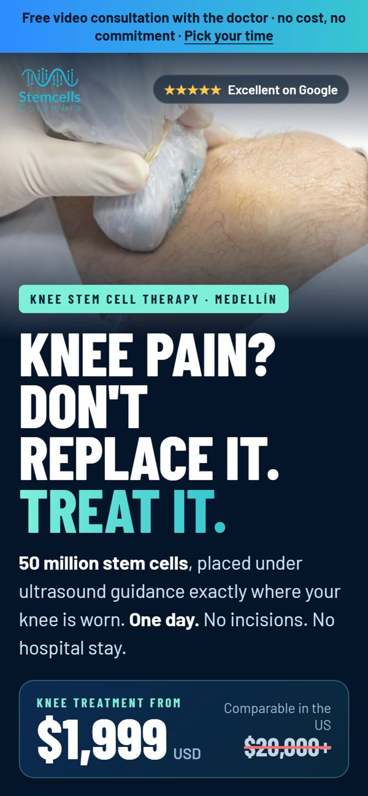
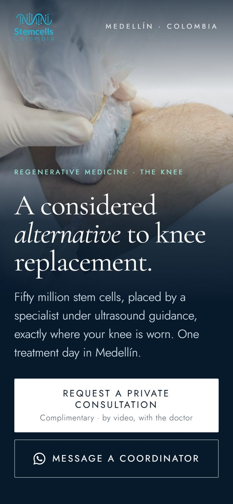

Google Ads · Muestra interna
Landing de rodilla: 2 opciones
La misma página, con el mismo contenido de base y los mismos dos botones (consulta gratis con el doctor y WhatsApp), en dos estilos. Ábralas en el celular: así las verá el paciente.

Opción A
Ver la opción A →
Comercial
- El precio al frente: desde $1,999 contra $20,000+ en EE. UU.
- Titulares grandes y directos, con los ganchos de los videos de Deeplook
- Testimonios en video arriba, reseñas de Google y cifras
- Botones verdes y aqua en cada sección

Opción B
Ver la opción B →
Premium
- Sin precio: «su plan y su precio, por escrito, después de la consulta»
- Estilo de clínica privada: letra clásica, mucho aire, fotos grandes
- La ciencia y la ficha de las células como protagonistas
- Testimonios en video con sus frases, médicos y Medellín
Para revisar: las dos tienen el calendario de la consulta gratis con el doctor y el WhatsApp con el mensaje «Hi, I'm interested in knee treatment», y traen listo el rastreo (clics, videos vistos y citas) para conectarlo a Google Ads y Meta. Es una vista previa: no sale en Google ni está publicada en GHL todavía.